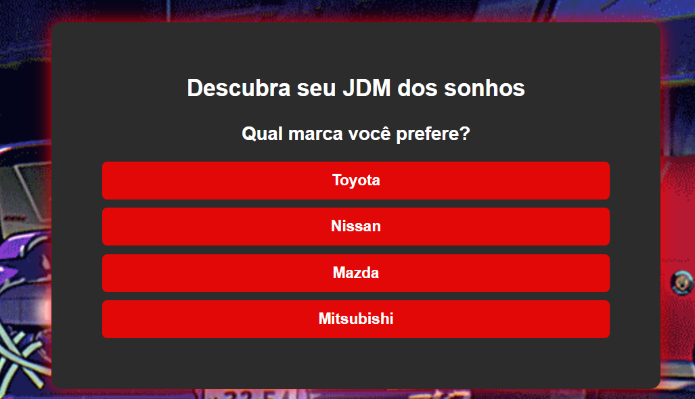

QUIZ QUAL SERIA SEU JDM?
Você já se perguntou qual carro JDM representa melhor sua personalidade e estilo de vida? Está na hora de descobrir! Mergulhe no universo da cultura automotiva japonesa e responda algumas perguntas para encontrar o modelo perfeito pra você — seja um clássico dos anos 90 ou uma máquina turbinada feita para as pistas.

Vamos jogar?
Clique no botão abaixo, responda com sinceridade e descubra qual ícone JDM poderia estar na sua garagem dos sonhos!
QUIZ
